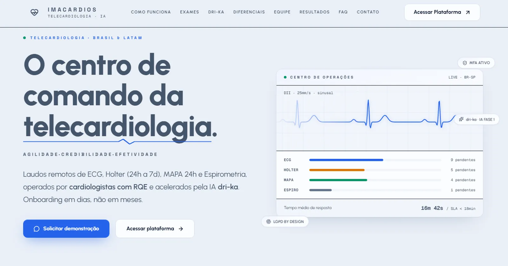

IMACARDIOS
app.imacardios.comCentro de comando de telecardiologia para o Brasil e a América Latina: laudos remotos de ECG, Holter, MAPA 24h e espirometria, assinados por cardiologistas com RQE e acelerados pela IA dri-ka. Atuo no backend, no frontend, na modelagem do banco e nas APIs que movem exame, laudo e assinatura entre as pontas, com fila por modalidade e SLA de resposta abaixo de 18 minutos.
- Telecardiologia
- IA aplicada
- APIs
- MFA
- LGPD by design
